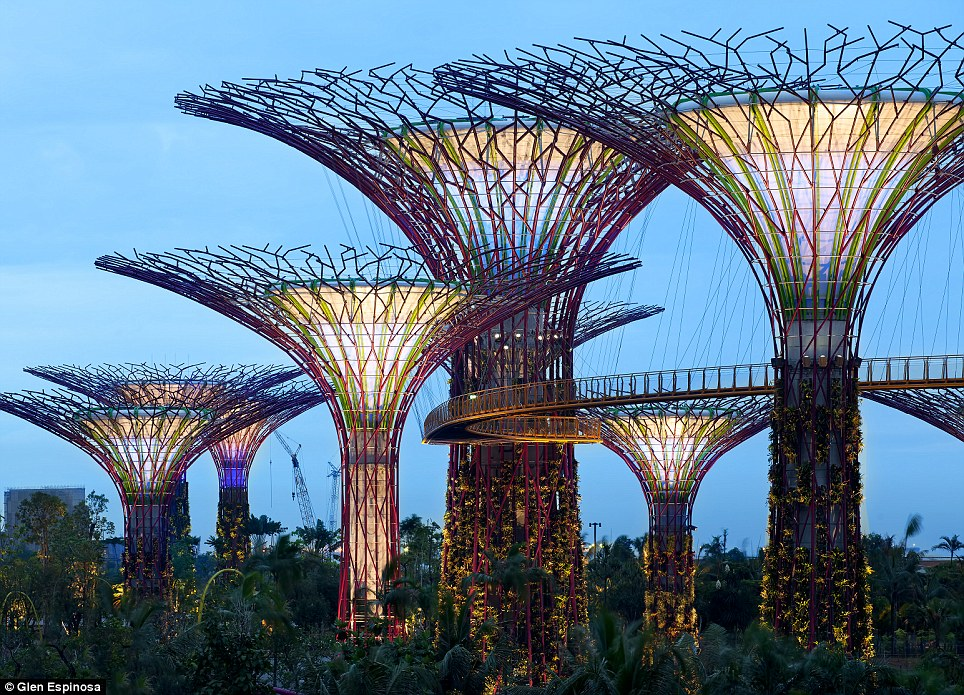

Celebrate the Lunar New Year with a visit to Gardens By The Bay
Content page
Click for map
Click for more info about the different gardens
Click for directions
Flora & Fauna
Take a trip down to marvel at the iconic architectural wonders
Click here to find out more about the attractions !

This map will guide you through the heavenly gardens !

Click to go back to top
Get to know more about this place before visiting
- The largest of the gardens is the Bay South Garden at 54 hectares (130 acres) designed by Grant Associates
- Flower Dome is the largest glass greenhouse in the world
- Gardens by the Bay was part of the nation's plans to transform its "Garden City" to a "City in a Garden", with the aim of raising the quality of life by enhancing greenery and flora in the city
- First announced by Prime Minister Lee Hsien Loong at Singapore's National Day Rally in 2005, Gardens by the Bay was intended to be Singapore's premier urban outdoor recreation space and a national icon
Getting here is easy
- By train : Once at Bayfront MRT station, take exit B and and follow the underground walkway, exit and cross the Dragonfly Bridge or Meadow Bridge into Gardens by the Bay
- By car : Simply park at Bayfront Plaza Car Park
- By bus: From Tanjong Pagar MRT Station (EW15),
take Exit C and head towards bus stop no. 03223 located at International Plaza, Anson Road
Hop onto bus 400 and alight at bus stop no. 03371 along Marina Gardens Drive
Flower dome
- The breathtaking display of exotic flowers and plants from 5 different continents across nine different gardens !
- Admission Rate: For Two Conservatories – $28 (adult) / $15 (child 3-12 years old) (Two conservatories include: Cloud Forest and Flower Dome)
- Operating Hours: 9:00am – 9:00pm daily
- Tip: Take your time going through the gardens – especially if it’s hot outside! The flower dome and cloud forest is the best place to cool down at the park (bring a jacket)
Cloud Forest
- With a 11,500 feet elevation at the viewpoint , . the tropical highlands hosts a wide range of plant life with the indoor section resembling a cave
- Cloud Forest was once home to the tallest indoor waterfall (30M) – which has since been dubbed by the Jewel – Airport Singapore Mall.
- Admission Rate: For Two Conservatories – $28 (adult) / $15 (child 3-12 years old) (Two conservatories include: Cloud Forest and Flower Dome)
- Operating Hours: 9:00am – 9:00pm daily
- Tip : As soon as the park opens, head straight to the Cloud Forest Conservatory. This way, you can get a photo in front of the 30 meters indoor waterfall with no distractions (seen in the middle image below). Another great photo-op is at the Treetop Walk with the Cloud Walk in the background.
Supertree Grove
- The trees comprise of more than 200 species of plants and are it’s own “garden”. The SkyWay connects two supertrees for a 128-meter walkway that overlooks Gardens By The Bay, creating a perfect photo spot.
- Admission Rate: Admission to Supertree Grove is free. Admission for OCBC Skyway: Adult: $8 / Senior (≥60 years old): $8 / Child (3-12 years old): $5
- Operating Hours: Supertree Grove (5:00am – 2:00am daily) / OCBS Skyway (9:00am – 9:00pm daily)
Click to go back to top